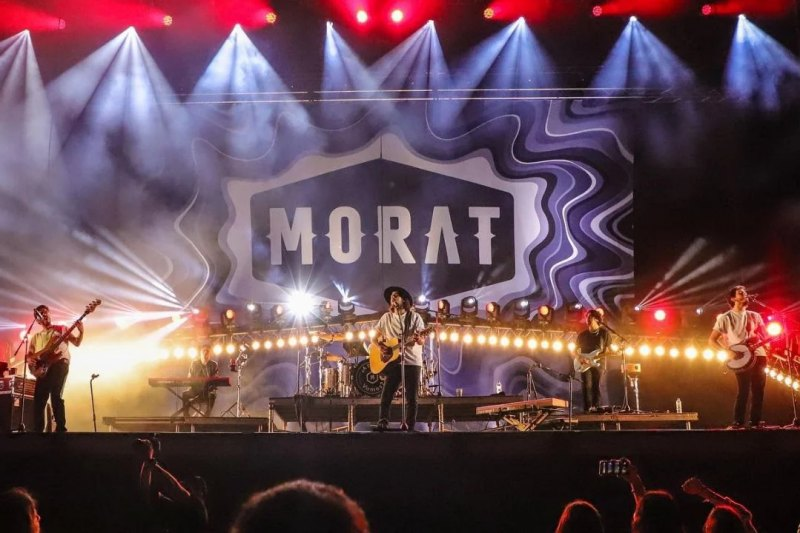
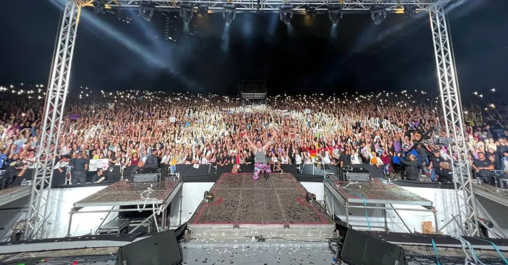

Nosotros
Pulso Musical es tu mejor aliado para vivir la música en vivo. Somos más que una plataforma de venta de boletos, somos tu pase a un mundo lleno de emociones y experiencias inolvidables. Con nosotros, descubrirás los conciertos más esperados del año y podrás asegurar tus entradas de forma rápida y segura. Desde los artistas más reconocidos hasta las nuevas promesas de la música, en Pulso Musical encontrarás la diversidad musical que buscas. ¡Únete a nuestra comunidad de amantes de la música y vive cada concierto al máximo!
Nuestras sedes de conciertos
Estadio olímpico de la Universidad central de Venezuela
Más informaciónEstadio Monumental de Caracas
Más informaciónConcha acústica de Bello Monte
Más informaciónPróximos conciertos
Morat
Morat es una banda colombiana de pop latino que se ha hecho famosa por sus canciones románticas y melodías pegadizas. Nacieron en Bogotá y su música suele explorar diferentes géneros, desde baladas hasta toques más pop rock.
Una de sus canciones mas exitosas es ¿Cómo te atreves?
Precio de boletos
- General: $50
- Numerada: $80
- VIP: $150
- Pista: $100
- Palco: $200
Fecha y ubicación
Ven, conoce y disfruta de la música de Morat el 16 de Noviembre de 2024 a las 6:00 PM en el estadio olimpico de la Universidad central de Venezuela. No te lo pierdas!
Chyno y Nacho
Chyno y Nacho fueron una de las duplas musicales más exitosas de Latinoamérica, dejando un legado de canciones inolvidables y una gran cantidad de fans. Su música sigue siendo muy popular y su reencuentro ha sido recibido con gran entusiasmo por sus seguidores.
Uno de los grandes éxitos por lo que es conocido esta dupla sensacional es la canción "Mi niña bonita"
Precio de boletos
- General: $55
- Numerada: $85
- VIP: $140
- Pista: $120
- Palco: $180
Fecha y ubicación
Ven, conoce y disfruta de la música de Chyno y Nacho el 10 de Diciembre de 2024 a las 6:00 PM en el estadio Monumental de Caracas . No te lo pierdas!
Lasso
Lasso, cuyo nombre real es Andrés Vicente Lazo Uslar, es un cantante, compositor y actor venezolano que ha ganado gran popularidad en los últimos años. Con su estilo musical que fusiona pop, rock y baladas, Lasso ha logrado conquistar al público latinoamericano y más allá.
Una de las canciones por la que es conocido es "Ojos marrones"
Precio de boletos
- General: $60
- Numerada: $100
- VIP: $150
- Pista: $130
- Palco: $190
Fecha y ubicación
Ven, conoce y disfruta de la música de Lasso el 10 de Enero de 2025 a las 6:00 PM en la Concha Acústica de Bello Monte. No te lo pierdas!
